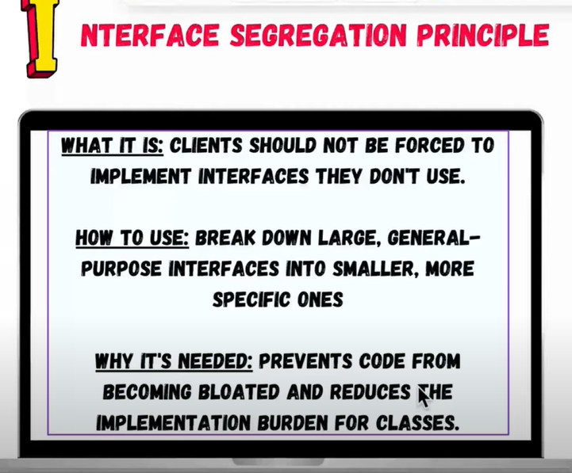

The Interface Segregation Principle (ISP) states that
no client should be forced to depend on methods it does not use.
This principle is part of the SOLID principles in object-oriented
design and helps create interfaces that are specific to the
needs of different clients, avoiding "fat" or overly broad interfaces.
